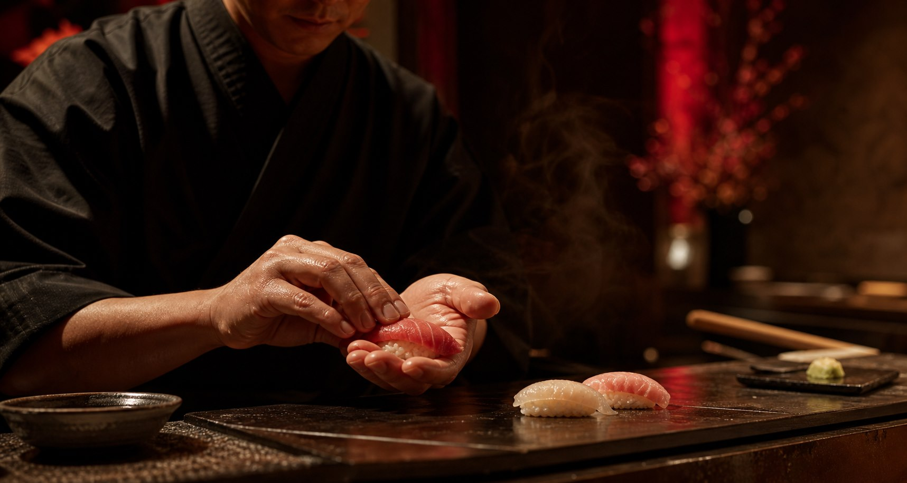
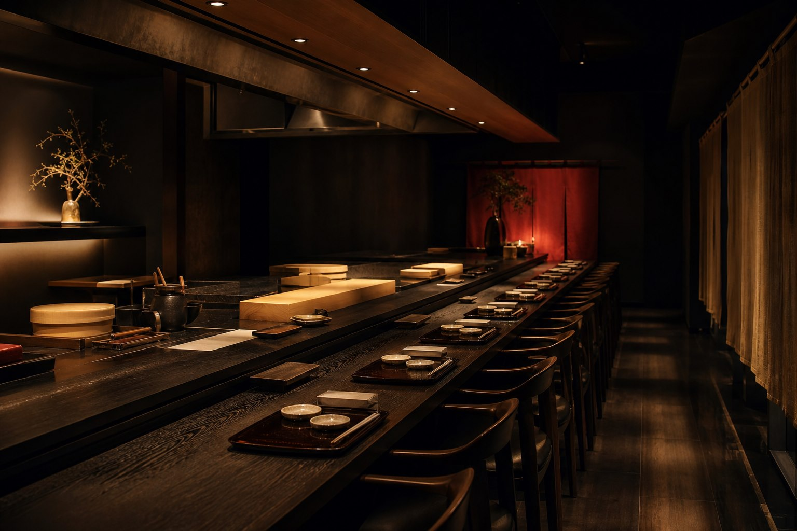
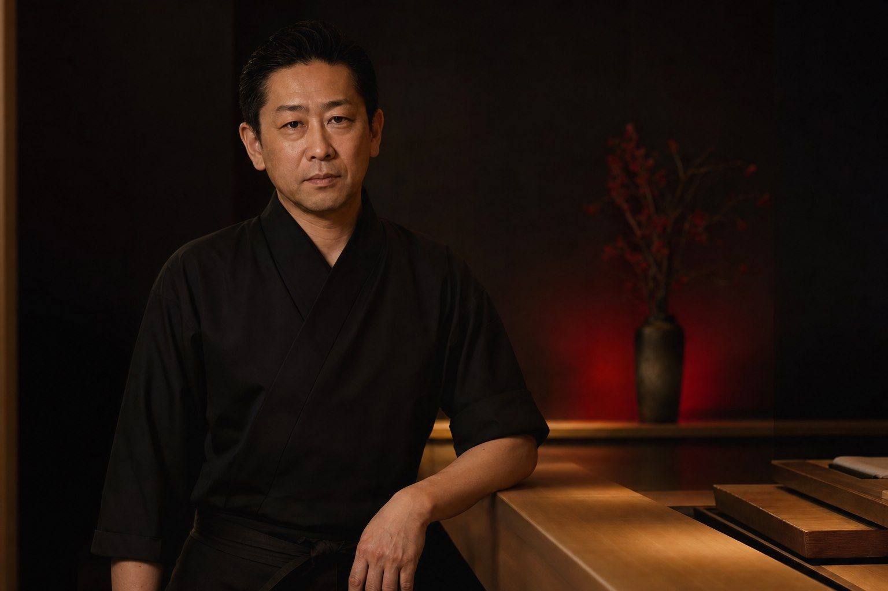

Tecnica edomae
Pescado madurado, tare pincelado, arroz tibio y cortes limpios dan forma a cada pieza.
Preparando la barra
Kaze 0%
Una barra de sushi de doce lugares para nigiri de temporada, sashimi impecable, sake excepcional y noches guiadas por el ritmo del chef Kenji Sato.
La experiencia Kaze
Kaze esta construido alrededor de una precision silenciosa. El pescado llega a diario, el arroz se sazona en pequenas tandas y cada pieza cruza la barra en el instante exacto en que debe comerse.

Pescado madurado, tare pincelado, arroz tibio y cortes limpios dan forma a cada pieza.
La seleccion se mueve con los mercados japoneses, aguas locales y la inspeccion matinal del chef.
Una barra oscura y minimalista disenada para foco, conversacion y ritmo exacto.
El ritual
Cada servicio avanza con gestos medidos: temperatura, corte, mercado, sake y silencio. Nada se acelera; cada pieza llega cuando tiene que llegar.
El shari se sirve tibio para que el pescado respire y la salinidad aparezca sin esfuerzo.
Cada corte busca textura, brillo y longitud exacta antes de tocar la mano del chef.
La progresion cambia con la maduracion, el mercado y la inspeccion de la manana.
La temperatura de cada copa acompana grasa, acidez y pausa entre bocados.
Omakase del chef
La progresion nocturna avanza desde sashimi limpio hacia nigiri tibio, un hand roll, sopa clara y un dulce final contenido.
Maridaje de sake
El maridaje recorre junmai, ginjo, nama y sake madurado, ajustando temperatura y textura a cada paso.
Ver maridajesSelecciones elegantes de junmai y ginjo con elevacion, textura y equilibrio.
Nama, kimoto, sake espumoso y botellas regionales poco frecuentes.
Daiginjo limitado y sake madurado abiertos para noches especiales en la barra.

Chef Kenji Sato
Kenji Sato se formo en Tokio antes de construir Kaze alrededor de la temperatura del arroz, la maduracion del pescado y la disciplina de servir cada pieza en su punto mas fugaz.
"Omakase es confianza. El invitado nos entrega la noche y respondemos pieza por pieza."
Kenji Sato
Galeria
Escenas de una barra oscura inspirada en Tokio: laca, veta, pescado, manos y pequenas pausas entre piezas.
Resenas
"Kaze es exacto sin sentirse frio. La temperatura del arroz, el sake, el ritmo: cada detalle llega en silencio."
Mara Whitman"Una pequena barra oscura con la disciplina de Tokio y la calidez de un chef que lee a cada invitado."
Julian Reeves"Solo el paso de uni ya justifico la reserva. Contenido, hermoso y completamente memorable."
Clara BennettOmakase privado
Reserva la barra completa para un omakase privado construido alrededor de pescado de temporada, maridaje de sake, servicio silencioso y el ritmo de tus invitados.
Planear omakase privadoReservas
Para alergias, solicitudes de maridaje de sake o reservas privadas de barra completa, deja una nota y nuestro equipo respondera con disponibilidad.
Ubicacion
Horarios Martes a sabado, turnos 6:00 PM y 8:45 PM
Telefono +1 212 555 0147
Kaze Omakase
New York
Preguntas frecuentes
La mayoria de los turnos dura alrededor de dos horas. Recomendamos llegar diez minutos antes para que la barra pueda comenzar junta.
Incluye alergias al solicitar tu reserva. Como el menu se centra en pescado, arroz, soja y mariscos, algunas restricciones pueden requerir confirmacion previa.
Kaze trabaja solo con omakase. El chef puede ofrecer piezas suplementarias segun el mercado.
Las reservas pueden modificarse hasta 48 horas antes de la llegada. Las cancelaciones tardias de omakase pueden generar un cargo.
Si. La barra completa puede reservarse para hasta 12 invitados con maridaje de sake opcional.